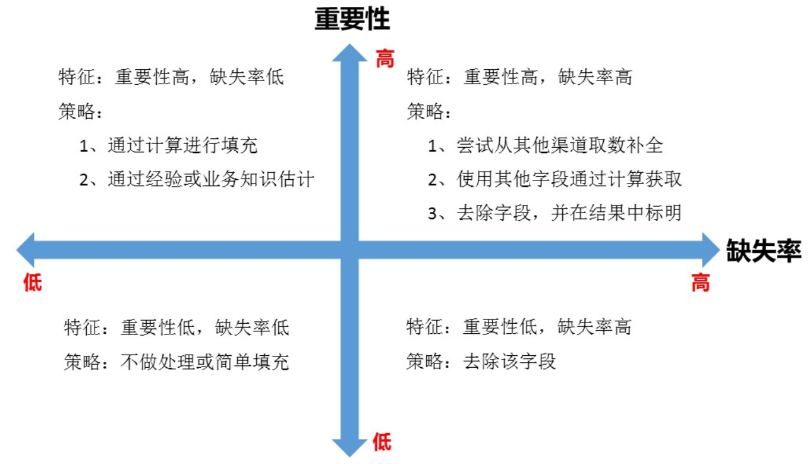

整理机器学习数据清洗与特征处理相关知识
机器学习数据预处理工艺流程
确定预测目标
- 确定问题域/预测目标：如根据用户的历史还款周期确定是否优质用户
确定特征获取方案
确定数据源
确定完成预测目标的数据来源：如用户多头借贷数据、设备数据、借贷行为数据、消费行为数据；
确定数据获取方案
离线同步方案
授权&签订保密协议，以移动硬盘等外部存储设备同步数据
实时/准实时（T+1）数据获取方案
打通内部网络，或开放数据接口，以CSV或Parquet进行同步，spark可直接读取parquet/csv数据生成hive table。
- 数据安全性：敏感字段加密脱敏；
- 同步性能：以redis等k-v数据库存储，或Cassandra等读写性能高的列数据库进行存储；
- 增量更新：根据数据的生命周期，确定增量更新的数据
确定特征
确定各数据源中能完成预测目标的特征
梳理特征
采样以下方法：
- 借鉴专家经验：同业务专家梳理业务流程，确定各业务流程中涉及的数据源和数据结构
- 输出：Visio业务流程图、Excel数据字典
- 数据分析：采用一些统计分析、可视化分析方法进行辅助特征选择
- 看元数据，包括字段解释、数据来源、代码表等等一切描述数据的信息；
- 抽取一部分数据，使用人工查看方式，对数据本身有一个直观的了解，并且初步发现一些问题，为之后的清洗做准备。
特征可用性分析
- 数据获取难度：用户个人敏感信息，如个人4要素
- 数据的准确性：如业务系统未控制的，用户可随意填写的字段
- 数据的覆盖率：缺失情况
特征数据清洗
数据清洗， 是整个数据分析过程中不可缺少的一个环节，其结果质量直接关系到模型效果和最终结论。
在实际操作中，数据清洗通常会占据分析过程的50%—80%的时间。
格式内容清洗
如果数据是由系统日志而来，那么通常在格式和内容方面，会与元数据的描述一致；而如果数据是由人工收集或用户填写而来，则有很大可能性在格式和内容上存在一些问题，格式内容问题有以下几类：
- 时间、日期、数值、全半角等显示格式不一致；
这种问题通常与输入端有关，在整合多来源数据时也有可能遇到，将其处理成一致的某种格式即可。 - 内容中有不该存在的字符；
某些内容可能只包括一部分字符，比如身份证号是数字+字母，中国人姓名是汉字（赵C这种情况还是少数）。
最典型的就是头、尾、中间的空格，也可能出现姓名中存在数字符号、身份证号中出现汉字等问题。这种情况下，需要以半自动校验半人工方式来找出可能存在的问题，并去除不需要的字符。 - 内容与该字段应有内容不符；
姓名写了性别，身份证号写了手机号等等，均属这种问题。
此不能简单的以删除来处理，因为成因有可能是人工填写错误，也有可能是前端没有校验，还有可能是导入数据时部分或全部存在列没有对齐的问题，因此要详细识别问题类型进行逐个处理。
异常值处理
用逻辑推理发现问题数据，防止分析结果走偏。主要包含以下几个步骤：
去除不合理值
如年龄中存在负值等违背常识的数据
可构建箱形图分析
修正矛盾内容
有些字段是可以互相验证的，此时需要根据字段的数据来源，来判定哪个字段提供的信息更为可靠，去除或重构不可靠的字段。
如身份证号中包含出身年月、性别、年龄等元信息；
重复值处理
- 数据源问题：直接删除
- 数据交换问题：和数据源提供方确认后重取数据；
缺失值处理
确定缺失值范围
对每个字段都计算其缺失值比例，然后按照缺失比例和字段重要性，分别制定策略，可用下图表示：

删除不需要的字段
填充缺失内容
某些缺失值可以进行填充，方法有以下三种：
- 以业务知识或经验推测填充缺失值；
- 以同一指标的计算结果（均值、中位数、众数等）填充缺失值；
- 以不同指标的计算结果填充缺失值，如年龄字段缺失，但是有屏蔽后六位的身份证号可以计算得出年龄；
重新取数
如果某些指标非常重要又缺失率高，那就需要和取数人员或业务人员了解，是否有其他渠道可以取到相关数据。
标注数据清洗
非平衡数据集的处理与建模，可从3个方面进行考虑：
- 收集更多的数据；(╯﹏╰）
- 样本平衡，常见的方法，over-sample, under-sample，smote。
- 建模方法：可以采用对非平衡数据集不敏感的算法。
样本均衡
过采样（ over-sample）
随机采样
生成新数据SMOTE（Synthetic Minority Over-sampling Technique）
欠采样（ under-sample）
样本过滤
业务逻辑过滤
结合业务情况进行数据的过滤如去除crawler抓取，spam，作弊等数据。
异常点检测
采用异常点检测算法对样本进行分析，常用的异常点检测算法：
- 偏差检测，例如聚类，最近邻等。
- 基于统计的异常点检测算法
例如极差，四分位数间距，均差，标准差等，这种方法适合于挖掘单变量的数值型数据。全距(Range)，又称极差，是用来表示统计资料中的变异量数(measures of variation) ，其最大值与最小值之间的差距；四分位距通常是用来构建箱形图，以及对概率分布的简要图表概述。 - 基于距离的异常点检测算法
主要通过距离方法来检测异常点，将数据集中与大多数点之间距离大于某个阈值的点视为异常点，主要使用的距离度量方法有绝对距离 ( 曼哈顿距离 ) 、欧氏距离和马氏距离等方法。 - 基于密度的异常点检测算法
考察当前点周围密度，可以发现局部异常点，例如局部异常因子算法-Local Outlier Factor(LOF)
特征分类
根据不同的分类方法，可以将特征分为
- Low level特征和High level特征；
- 稳定特征与动态特征；
- 二值特征、连续特征、枚举特征；
- 定性特征、定量特征
特征处理
定性特征（category）
定性特征，表示某个数据点属于某一个类别，或具有某一种类的特性。一列定性特征，默认用自然数表示（可以用sklearn.preprocessing中的LabelEncoder将字符串转化为自然数）。如果一列定性特征里有K种不同类别，其取值范围是{0, 1, 2, 3, …, K-1}。
例：颜色、性别、地址、血型、国籍、省、市、邮政编码。
onehot编码（One-hot Encoding）
对于每一个特征，如果它有m个可能值，那么经过独热编码后，就变成了m个二元特征。并且，这些特征互斥，每次只有一个激活。因此，数据会变成稀疏的。
好处：
定量特征（continous）
定量特征（numerical feature），可以是连续的（continuous），也可以是离散的（discrete），一般表示为一个实数值。
例：年龄、价格、身高、体重、测量数据。
归一化（Normalization）
方法
- 把数变为（0，1）之间的小数主要是为了数据处理方便提出来的，把数据映射到0～1范围之内处理，更加便捷快速；
- 把有量纲表达式变为无量纲表达式，归一化是一种简化计算的方式，即将有量纲的表达式，经过变换，化为无量纲的表达式，成为纯量。
一般的方法是$ (x-min(x))/(max(x)-min(x))$
特点
对不同特征维度的伸缩变换的目的是使各个特征维度对目标函数的影响权重是一致的，即使得那些扁平分布的数据伸缩变换成类圆形。这也就改变了原始数据的分布。
好处
- 提高迭代求解的
收敛速度； - 提高迭代求解的精度；
标准化（Standardization）
方法
数据的标准化是将数据按比例缩放，使之落入一个小的特定区间。
常规标准化公式为：$(x-mean(x)/std(x)$ 计算时对每个属性/每列分别进行。
将数据按期属性（按列进行）减去其均值，并除以其方差。得到的结果是，对于每个属性/每列来说所有数据都聚集在$0$附近，方差为$1$。
特点
对不同特征维度的伸缩变换的目的是使得不同度量之间的特征具有可比性。同时不改变原始数据的分布。
好处
- 使得不同度量之间的特征具有
可比性，对目标函数的影响体现在几何分布上，而不是数值上； - 不改变原始数据的分布。
区间缩放（Scaling）
注意事项
- 保存各阶段的中间数据结果；
- 记录各类预处理工具的操作脚本，并归纳整理成预处理工具集；
问题
归一化与标准化的区别
归一化，一般的方法是$ (x-min(x))/(max(x)-min(x))$
标准化，一般方法是$(x-mean(x))/std(x) $
这两种方法都是属于线性转换，都是按比例缩放的
但是归一化还有其他方法（如对数Logistic模式），不一定是按比例缩放的。所以，他们之间不是子集和全集的关系。